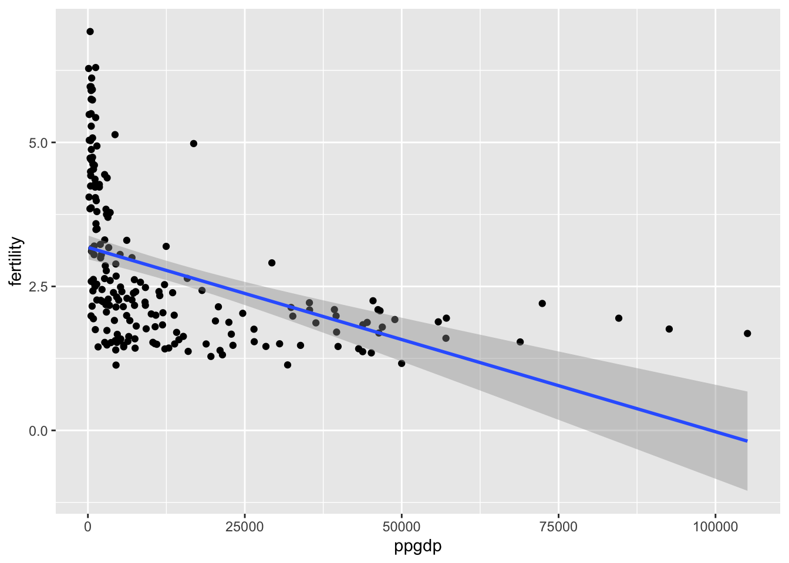
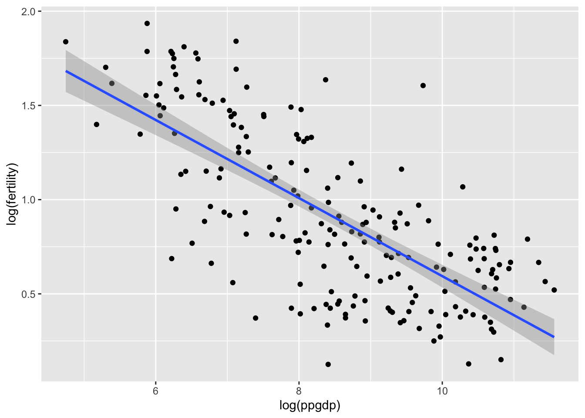
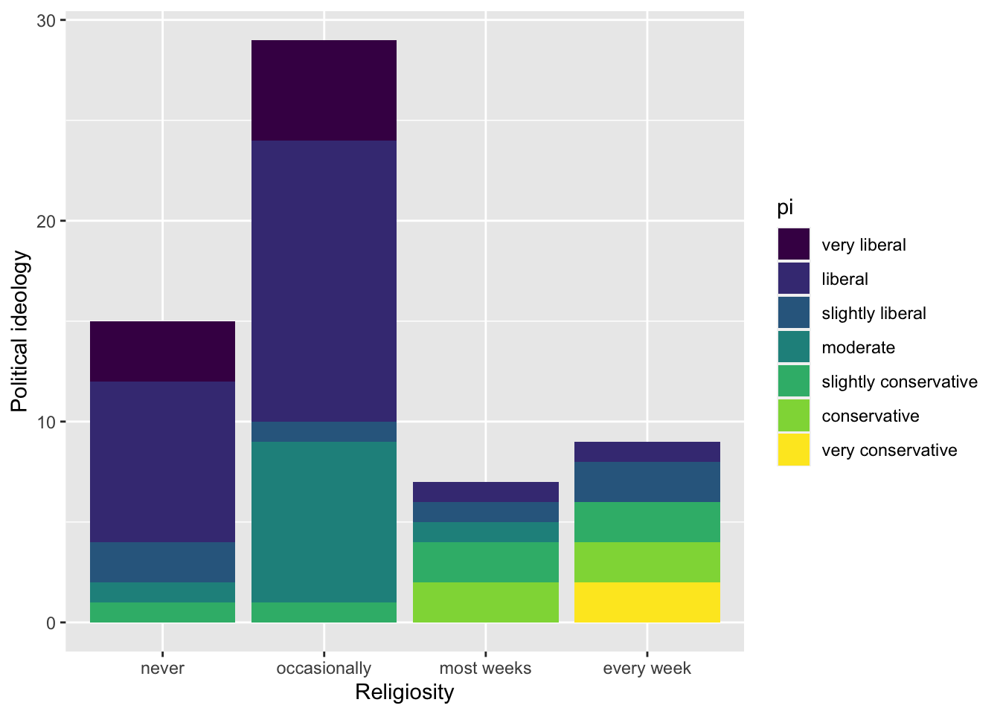
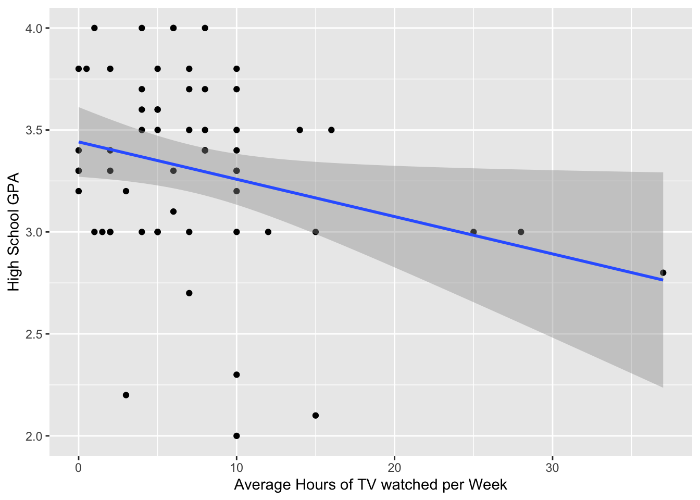

Code
library(tidyverse)
library(ggplot2)
library(stats)
library(alr4)
library(smss)
knitr::opts_chunk$set(echo = TRUE)library(tidyverse)
library(ggplot2)
library(stats)
library(alr4)
library(smss)
knitr::opts_chunk$set(echo = TRUE)data(UN11)
UN11The predictor variable is ppgdp and the response variable is fertility.
UN11 %>%
select(c(ppgdp,fertility)) %>%
ggplot(aes(x = ppgdp, y = fertility)) +
geom_point()+
geom_smooth(method=lm)`geom_smooth()` using formula 'y ~ x'
The graph shows an intense negative relationship between a country’s gross national product per person and fertility rate at first, then there appears to be little change in fertility in relationship to ppgdp moving beyond this point. A straight-line mean function does not seem to be an appropriate measure for summary of this graph.
UN11 %>%
select(c(ppgdp,fertility)) %>%
ggplot(aes(x = log(ppgdp), y = log(fertility))) +
geom_point()+
geom_smooth(method=lm)`geom_smooth()` using formula 'y ~ x'
The relationship between the variables appears to be negative throughout the graph. The simple linear regression seems plausible for summary of this graph.
UN11$british <- 1.33 * UN11$ppgdp
summary(lm(fertility ~ british, UN11))
Call:
lm(formula = fertility ~ british, data = UN11)
Residuals:
Min 1Q Median 3Q Max
-1.9006 -0.8801 -0.3547 0.6749 3.7585
Coefficients:
Estimate Std. Error t value Pr(>|t|)
(Intercept) 3.178e+00 1.048e-01 30.331 < 2e-16 ***
british -2.407e-05 3.500e-06 -6.877 7.9e-11 ***
---
Signif. codes: 0 '***' 0.001 '**' 0.01 '*' 0.05 '.' 0.1 ' ' 1
Residual standard error: 1.206 on 197 degrees of freedom
Multiple R-squared: 0.1936, Adjusted R-squared: 0.1895
F-statistic: 47.29 on 1 and 197 DF, p-value: 7.903e-11summary(lm(fertility ~ ppgdp, UN11))
Call:
lm(formula = fertility ~ ppgdp, data = UN11)
Residuals:
Min 1Q Median 3Q Max
-1.9006 -0.8801 -0.3547 0.6749 3.7585
Coefficients:
Estimate Std. Error t value Pr(>|t|)
(Intercept) 3.178e+00 1.048e-01 30.331 < 2e-16 ***
ppgdp -3.201e-05 4.655e-06 -6.877 7.9e-11 ***
---
Signif. codes: 0 '***' 0.001 '**' 0.01 '*' 0.05 '.' 0.1 ' ' 1
Residual standard error: 1.206 on 197 degrees of freedom
Multiple R-squared: 0.1936, Adjusted R-squared: 0.1895
F-statistic: 47.29 on 1 and 197 DF, p-value: 7.903e-11The magnitude of the slope has reduced very slightly, the slope of the prediction equation changed.
cor(UN11$ppgdp, UN11$fertility)[1] -0.4399891cor(UN11$british, UN11$fertility)[1] -0.4399891The correlation does not change.
data(water)
pairs(water)
From the above plot, it seems that the stream run-off variable has a relationship to the ‘O’ named lakes but no real notable relationship to the ‘A’ named lakes.
data(Rateprof)
rate <- Rateprof %>% select(quality, helpfulness, clarity, easiness, raterInterest)
pairs(rate)
Interpreting to the scatter plot matrix of the average professor ratings for the topics of quality, clarity, helpfulness, easiness, and rater interest, the variables quality, clarity, and helpfulness appear to each have strong positive correlations with each other. The variable easiness appears to have a much weaker positive correlation with helpfulness, clarity, and quality. Rater interest does not appear to have much of a correlation to any of the other variables.So, we can say that Quality, helpfulness and clarity have the clearest linear relationships with one another and Easiness and raterInterest do not seem to have linear relationships with the other variables.
data(student.survey)
student.surveystudent.survey %>%
select(c(pi, re)) %>%
ggplot() +
geom_bar(aes(x = re, fill = pi)) +
xlab("Religiosity") +
ylab("Political ideology") 
Religiosity and conservatism seem to have a positive relationship.
student.survey %>%
select(c(tv, hi)) %>%
ggplot(aes(x = tv, y = hi)) +
geom_point() +
geom_smooth(method=lm) +
xlab("Average Hours of TV watched per Week") +
ylab("High School GPA") `geom_smooth()` using formula 'y ~ x'
High school GPA and TV-watching seem to have a negative relationship.
summary(lm(data = student.survey, formula = as.numeric(pi) ~ as.numeric(re)))
Call:
lm(formula = as.numeric(pi) ~ as.numeric(re), data = student.survey)
Residuals:
Min 1Q Median 3Q Max
-2.81243 -0.87160 0.09882 1.12840 3.09882
Coefficients:
Estimate Std. Error t value Pr(>|t|)
(Intercept) 0.9308 0.4252 2.189 0.0327 *
as.numeric(re) 0.9704 0.1792 5.416 1.22e-06 ***
---
Signif. codes: 0 '***' 0.001 '**' 0.01 '*' 0.05 '.' 0.1 ' ' 1
Residual standard error: 1.345 on 58 degrees of freedom
Multiple R-squared: 0.3359, Adjusted R-squared: 0.3244
F-statistic: 29.34 on 1 and 58 DF, p-value: 1.221e-06At a significance level of 0.01, there is a statistically significant association between religiosity and political ideology (as p-value < .01). The correlation is moderate and positive, suggesting that as weekly church attendance increases, political ideology becomes more conservative leaning.
summary(lm(data = student.survey, formula = hi ~ tv))
Call:
lm(formula = hi ~ tv, data = student.survey)
Residuals:
Min 1Q Median 3Q Max
-1.2583 -0.2456 0.0417 0.3368 0.7051
Coefficients:
Estimate Std. Error t value Pr(>|t|)
(Intercept) 3.441353 0.085345 40.323 <2e-16 ***
tv -0.018305 0.008658 -2.114 0.0388 *
---
Signif. codes: 0 '***' 0.001 '**' 0.01 '*' 0.05 '.' 0.1 ' ' 1
Residual standard error: 0.4467 on 58 degrees of freedom
Multiple R-squared: 0.07156, Adjusted R-squared: 0.05555
F-statistic: 4.471 on 1 and 58 DF, p-value: 0.03879With a slope of -0.018, there is a negative association between hours of tv watched per week and high school GPA, meaning that as hours of tv viewing increase, a student’s GPA tends to decrease. There is a statistically significant relationship between hours of tv viewed per week and GPA at a significance level of 0.05. However, the R-squared value is close to 0, which suggests that the regression model does not provide a strong prediction for the observed variables. This is not suprising after looking at the scatter plot with hours of tv watched and GPA, since there does not appear to be a linear trend in the data.